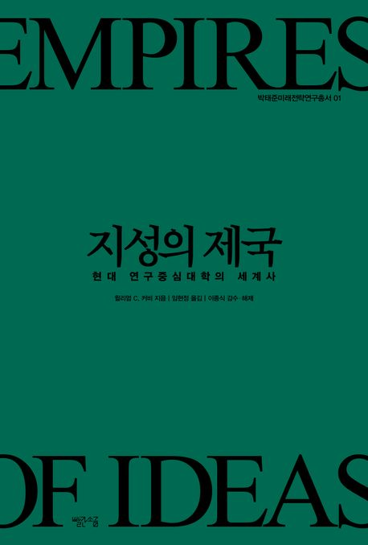
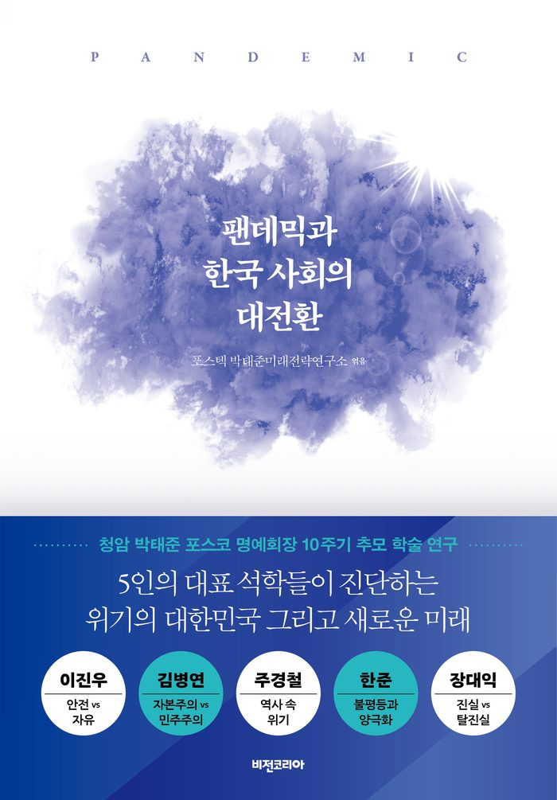
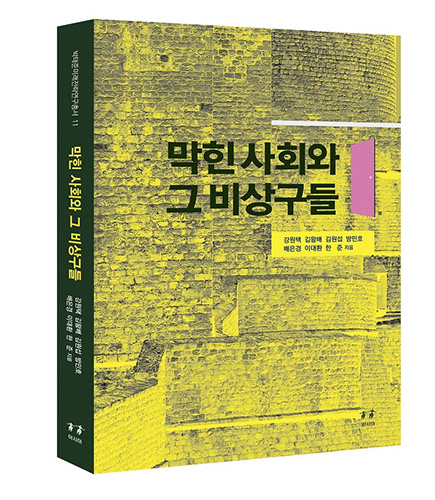
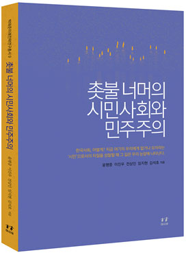
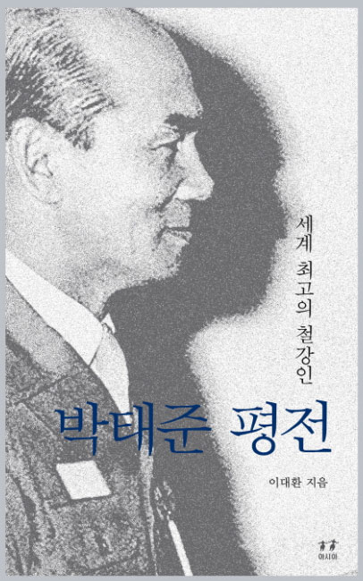
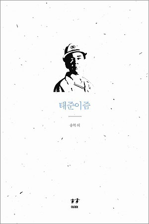
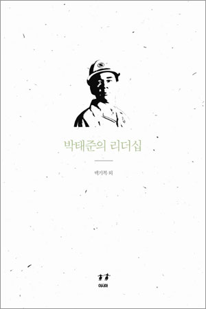

POSTECH Tae-Joon Park Institute
국가와 인류의
더 나은 미래를 위하여
무엇을 할 것인가?
미래사회를 조망하고 대응전략을 연구하며, 박태준 정신과 리더십을 체계적으로 탐구하여 사회에 전파합니다.
“What should we do for the better future of the nation and of mankind?”

지성의 제국 — 현대 연구중심대학의 세계사
2026년 박태준미래전략연구소는 ‘현대 연구중심대학의 세계사’를 엮은 미래전략연구 총서 14권 『지성의 제국』을 발간했다.
Introduce
박태준 회장의 정신을 계승하여
포스텍의 비전을 실현합니다
박태준 회장께서는 산업과 교육이 국가 발전의 핵심임을 강조하시며, 포스코와 포스텍을 설립하여 한국 경제와 학문의 중흥을 이끄셨습니다. ‘교육은 국가의 미래를 결정짓는 가장 중요한 투자’라는 신념으로 실용적 학문과 창의적 연구가 조화를 이루어야 함을 강조하셨습니다.
박태준미래전략연구소는 그 정신을 이어받아 대학과 사회가 직면한 미래 과제를 분석합니다. 첫째, 포스텍의 중장기 발전 전략을 수립합니다. 둘째, 박태준 정신과 리더십을 연구하여 차세대 인재들에게 전파하고 교육합니다.
박태준미래전략연구소 소장 송민석
2013년 설립
포스텍 이사회 설립 결의 후 2013년 2월 15일 개소
14권
미래전략연구총서 — 미래 핵심 의제에 대한 학제적 연구 성과
8권
박태준 연구총서 — 박태준의 삶·사상·리더십에 대한 체계적 연구
Research & Programs
연구소의 네 갈래 활동
미래전략연구
‘박태준 정신’을 기반으로 차별화된 미래전략을 연구하여, 우리 사회가 당면할 핵심 문제에 대한 조망과 대응 방향을 제안합니다.
연구 살펴보기 02박태준연구
철학·사회학·심리학·정치학·경영학 등 다양한 시각에서 박태준의 삶과 정신을 분석하고, 그 성과를 사회적 자산으로 전파합니다.
연구 살펴보기 03청년사업
대학(원)생 공모전과 포스텍 청년비전캠프를 통해 다음 세대가 스스로 미래를 묻고 답하도록 돕습니다.
프로그램 보기 04포럼 & 세미나
산학연관 전문가, 석학, 오피니언 리더가 한자리에 모여 국가의 미래 발전을 모색하는 토론의 장을 마련합니다.
행사 보기Publications
연구총서
미래전략연구총서와 박태준 연구총서를 통해 연구 성과를 사회와 공유합니다.
- 미래전략 14
지성의 제국
현대 연구중심대학의 세계사 · 2026
- 미래전략 13

팬데믹과 한국 사회의 대전환
포스텍 외 · 2021
- 미래전략 12

또 다른 지능, 다음 50년의 행복
장병탁 외 · 2019
- 미래전략 11

막힌 사회와 그 비상구들
강원택 외 · 2019
- 미래전략 09

촛불 너머의 시민사회와 민주주의
윤평중 외 · 2018
- 박태준연구

박태준 평전 — 세계 최고의 철강인
이대환 · 2016
- 박태준연구 01

태준이즘
이대환 외 · 2012
- 박태준연구 03

박태준의 리더십
백기복 외 · 2012
Life’s Chungam
박태준의 삶
“짧은 인생을 영원 조국에” — 청암 박태준이 걸어온 길을 시대별로 살펴봅니다.
1927–1947
식민지의 소년
부산 기장 출생, 일본에서 유년·학창시절. 차별의 설움이 극일(克日) 정신의 뿌리가 되다.
1948–1960
군인의 시간
해방 후 귀국하여 군에 투신, 국가 재건의 현장에서 조직과 원칙을 익히다.
1961–1967
부름을 받다
조국 근대화의 제단에 삶을 바치기로 결심, 종합제철 건설의 소명을 맡다.
1968–1992
제철보국
무(無)의 불모지에 포스코를 세워 세계 최고 철강기업으로 성장시키다.
1993–2000
교육보국
14개 유치원·초·중·고교와 한국 최초 연구중심대학 포스텍을 세워 교육의 신기원을 열다.
2001–2011
마지막까지
국가의 미래를 사색하고 실사구시의 전략을 구상하다. 2011년 12월 13일 향년 84세로 영면.
“짧은 인생을
영원 조국에”청암 박태준 (1927–2011)
News
연구소 소식
- 공지『도시의 미래, 공간과 산업을 생각한다』 포럼 개최2023.01.16
- 보도창원대 미래융합연구소–포스텍 미래전략연구소 업무협약2022.05.30
- 웹진대학의 역사와 앞으로의 사회적 역할2022.05.24
- 웹진대학원 생활에서 찾아온 슬럼프를 극복했던 이야기2022.05.24
- 보도대학 R&D 위기 직면 — 투자 확대·혁신 인프라 구축 필요2021.07.09
[미래전략총서 13] 팬데믹과 한국 사회의 대전환
코로나19로 인한 소득 불평등, 한국 사회는 어떻게 해결해야 할까? 총서의 핵심 논의를 카드뉴스로 정리했습니다.
For the Next Generation